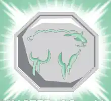

Dentre as virtudes dos nativos de Ovelha têm como principais carcterísticas a bondade e a disponibilidade para ouvir e atender com a mais completa atenção. Além disso, possuem imaginação fértil. Os nativos da Cabra são as pessoas nascidas nas seguintes datas:
Talismã da Ovelha
Esse talismã faz criar uma projeção astral, como um espirito que sai do corpo, que é capaz de vagar por qualquer lugar sem ser visto ou sentido e que pode entrar no sonho de qualquer pessoa.